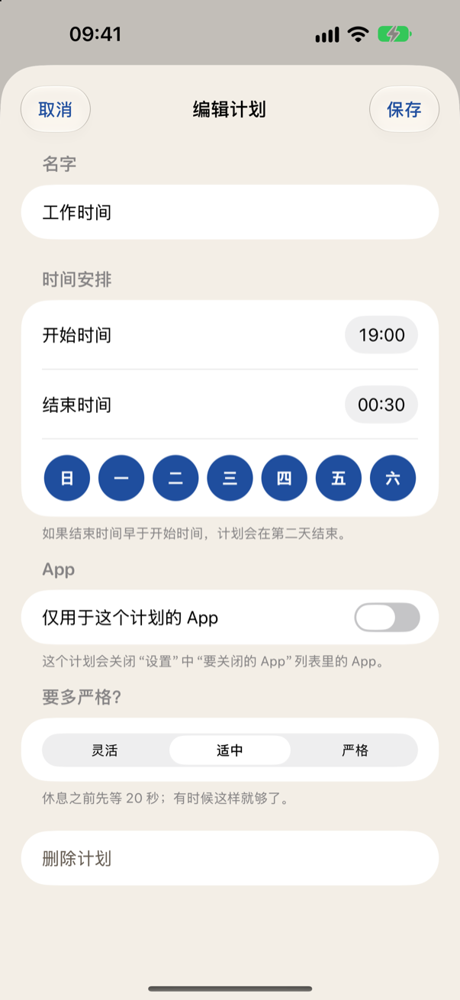
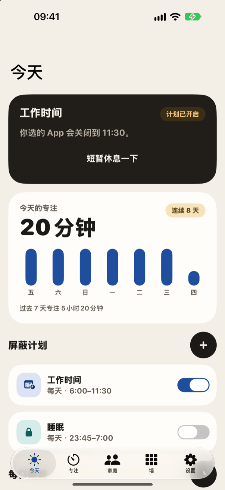
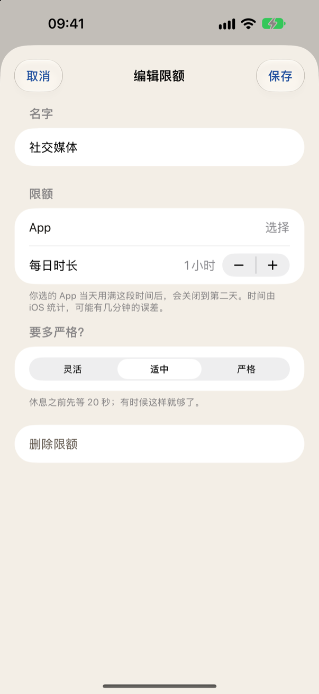
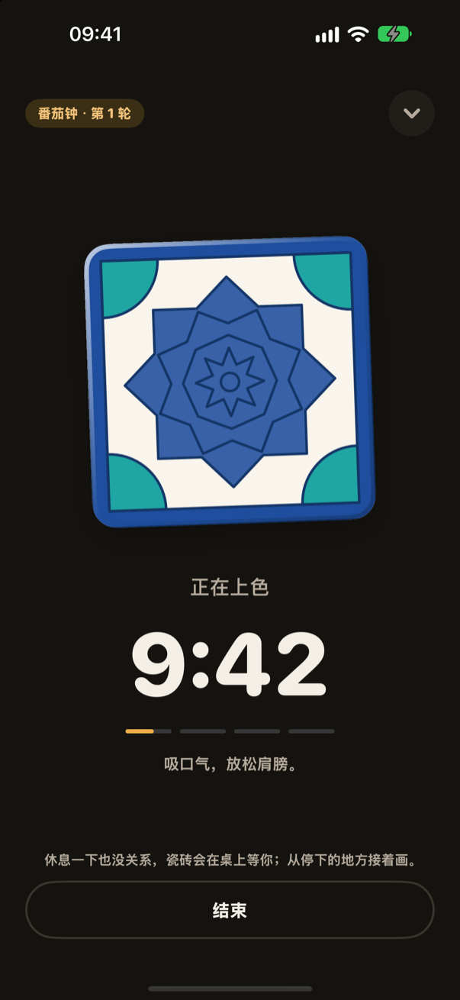
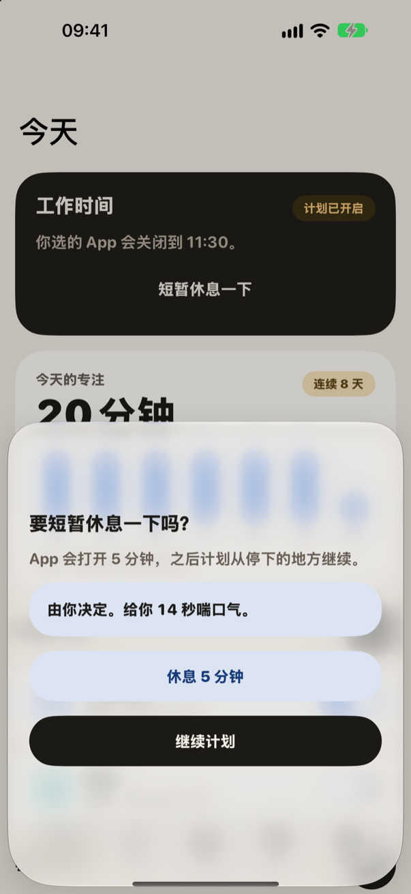
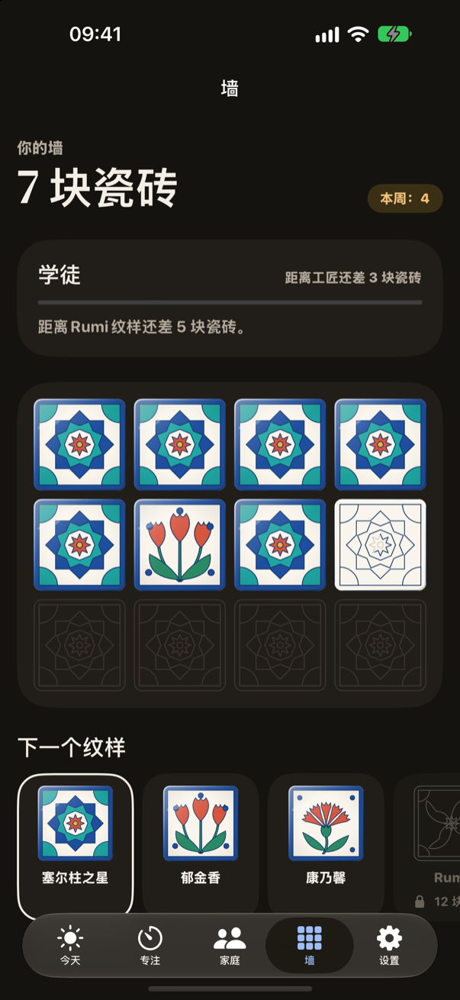
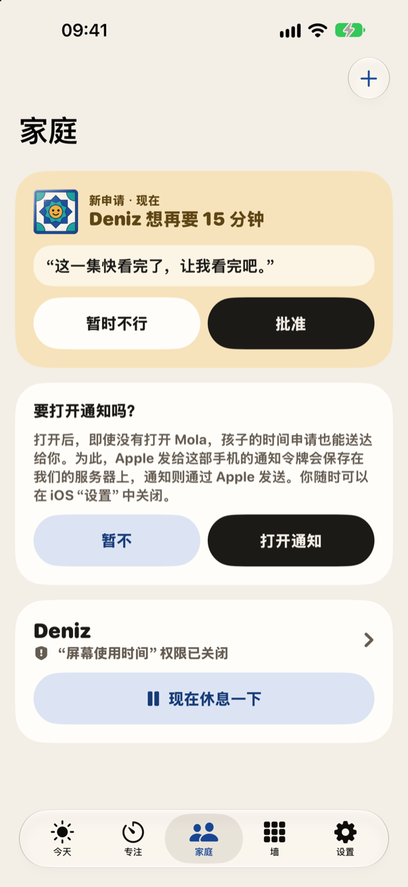
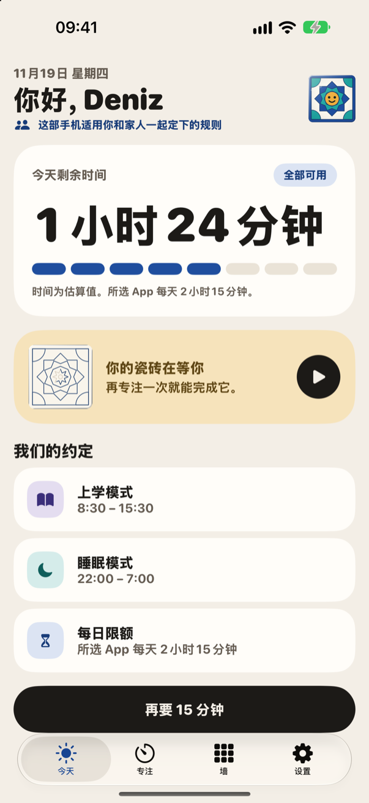

屏蔽计划
时段由你定，其余的自动完成
计划开始时，你选的 App 会关闭；计划结束后，它们会重新打开。你可以为工作日、周末或任意几天分别创建计划。
- 为工作、学习和睡眠时间分别创建计划
- 支持跨过午夜的计划
- 轻点一下即可开启或关闭计划

应用屏蔽与专注 · iPhone、iPad、Apple Watch
Mola 会在你设定的时段或每日时长用完后关闭你选的 App；每一次专注，都会为一块瓷砖上色。无需注册，你的使用数据只留在你的设备上。
需要 iOS 18 或更高版本。没有广告，没有跟踪。

用 Apple 自己的选择器，选出最让你分心的 App、类别和网站。你的选择不会离开你的手机。
为工作、学习和睡眠时间创建计划；计划之外，随时可以开始一次专注。
每一次专注都会为一块瓷砖上色。完成的瓷砖会在你的墙上越积越多；没画完的瓷砖，下次专注时从停下的地方继续。
屏蔽计划
计划开始时，你选的 App 会关闭；计划结束后，它们会重新打开。你可以为工作日、周末或任意几天分别创建计划。

每日限额
给你选的 App 一份每日时长。时间用完后，这些 App 会关闭，其他 App 照常可用。

专注
选一个现成的方案，或自己设定专注时长、轮数和休息时长。你愿意的话，专注进行期间，你选的 App 会保持关闭。

严格程度
在“适中”计划里想休息一下，或想提前结束专注时，Mola 会先请你等一会儿。有时候这样就够了。而“严格”计划在结束之前无法更改。

瓷砖墙
每一块瓷砖都是先勾轮廓，再上颜色，最后上釉。你从“塞尔柱之星”开始；墙越来越大，郁金香、康乃馨、Rumi、钦特玛尼、哈塔伊、交织和石榴纹样会依次出现，你也从学徒一步步走向师傅。

Apple Watch 上的专注计时器：手表 App 打开时，专注会与手机保持同步，画的是同一块瓷砖，剩余时间和当前时间一目了然。
在主屏幕上轻点一下即可开始专注，剩余时间一眼可见。
布局会随屏幕大小调整；折叠设备时，你不会丢失当前的位置。
土耳其语和英语，以及简体中文、德语、法语、西班牙语、日语、韩语、阿拉伯语等。
家庭
自己使用 Mola 的同时，你随时可以创建家庭。孩子手机的每日时长、上学时间和睡眠时间，由你和孩子一起决定；孩子能在自己的屏幕上看到哪条规则正在生效、原因是什么，以及持续到什么时候。
每日时长、上学模式和睡眠模式。没有隐藏的规则。
孩子写下简短的理由来申请更多时间；家长轻点一下即可回复。
Mola 不会让家长看到消息、照片、位置，或正在使用哪些 App。
家人设备之间的消息在设备上加密；我们的服务器无法读取内容。
家长安排的休息或新规则，会在孩子的手机打开 Mola 时生效。Mola 依靠 Apple 的“屏幕使用时间”系统运行。 家庭功能需按月或按年订阅；孩子的设备无需付费。


可在运行 iOS 18 或更高版本的 iPhone、运行 iPadOS 18 或更高版本的 iPad，以及运行 watchOS 11 或更高版本的 Apple Watch 上使用。
不需要。无需注册，没有电子邮件，也没有密码；打开 Mola 就可以开始使用。家庭功能同样不需要电子邮件地址或电话号码：设备通过二维码配对，你只需写一个家人能看到的名字。
可以。在“今天”标签页创建一个每日限额，选择 App 并设定每日时长。时间用完后，这些 App 会关闭；如果限额的严格程度允许，你可以休息 5 分钟。如果想改为在指定时段关闭，请使用屏蔽计划。
如果计划的严格程度允许，你可以休息 5 分钟。在“适中”计划里，休息之前要先等 20 秒；在“严格”计划里，计划结束之前没有休息。“灵活”和“适中”计划随时可以在 Mola 里关闭；“严格”计划在时间结束之前无法关闭。
不能。你通过 Apple 的“屏幕使用时间”选择器来选 App；Mola 连你选了哪些 App 的名字都不知道，只保存仅在你这台设备上有效的加密令牌。
只需要在家长和孩子的手机上都安装 Mola。为了让孩子无法自行移除规则，我们建议在“家人共享”中将孩子的 Apple 账户设置为儿童账户。
你的计划、专注记录和瓷砖墙保存在你的设备上，所以会随 App 一起删除。如果你用过家庭功能，“删除你的数据”页面说明了如何删除服务器上的记录。
用“屏幕使用时间”设置和 Mola，一步一步来。
App 限额、停用时间和 Mola 的每日限额。
25 分钟一轮、休息，以及工作时把手机放在一边。
Mola 即将登陆 App Store。